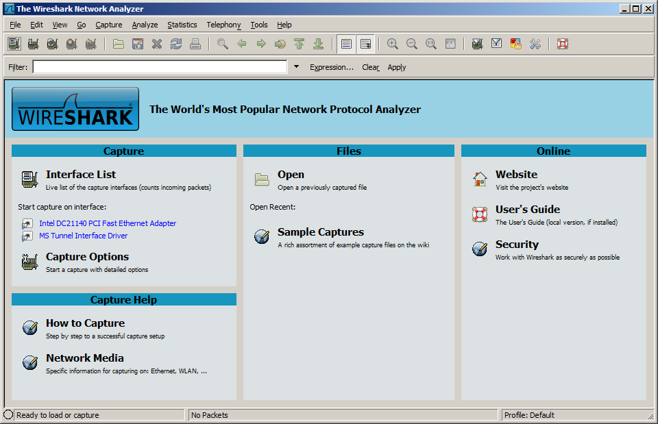

Note: do not only rely on the book for the answer. Consult LinkedIn Learning and Wikipedia. (50) 1. What is the tie-in between Robert Metcalfe and CSMA/CD(Carrier sense multiple access / collision detection)? Briefly explain your answer.
(25) 2.What does "promiscuous mode" mean in relation to the above question? Briefly explain your answer.
page 233
(25) 3. What is the difference between a physical design and a logical design?
(25) 4. What is meant by a "nondeterministic" protocol?
(25) 5. What is the primary advantage of power over Ethernet ?
(25) 6. What is the primary disadvantage of power over Ethernet ?
page 243
(25) 7. Is a hub a passive device? Explain.
(25) 8. If a network were described as 1000BaseT, list everything you would know about that network.
(25) 9. Which of the wireless LAN protocols can support data rates as high as 54Mbps? Is this theoretical or actual?
(50) 10. Your company wants to create a wireless network for the entire office building. The building is 10 stories high, and the company wants to incorporate IEEE 802.11a by placing one access point on the tenth floor. Will this layout work? Explain your answer.
page 237
(75) 11. A large company has many different departments housed in a large office complex in the city. Each department has a database of local information. The company wants to let all the employees from around the company access any of these databases. What type of network would you recommend for such a situation? Explain your answer.
page 238 (p246 in 5e)
Windows Server 2008 virtual machine- password is Wsu5838
Investigate WireShark which is installed on the WinSrv2008 vm. (note: WireShark was formerly Ethereal)  Start up both the Win 2008 server and Win982e Virtual Machines. Make sure both network cards are set to 'local only' Make sure that the Win 2008 server has IIS running. Open IE in the Win 98 machine and browse to 'http://server2008v' (25) 12. What do you see in IE?
(50) 13. Use the Snipping Tool to make a screen shot of the captured packets window from WireShark in the Win2008 vm. Save the screen shot as "ExWS" in your ' ' folder. You will be combining screen shots from several exercises at the end of this assignment, just as you did in Formative00-PDF File Creation.
(50) 14. Use the Snipping Tool to make a screen shot of the WireShark window in the Win2008 vm. Save the screen shot as "ExVM" in your ' ' folder. You will be combining screen shots from several exercises at the end of this assignment, just as you did in Formative00-PDF File Creation.
(125) 15. What does this data mean?
Use a web browser to verify that you have published your website to https://classes.winona.edu/... Check that your name, StarID, email, class, semester, section and all of your answers are correct and visible. From the menu choose File>Print... and using "Microsoft Print to PDF" save a copy of this assignment as a .pdf file in your ' ' folder.
(50) 16. Save your file 'WebPage.pdf' in your ' ' folder.
Create one .pdf (portable document format) file from the screen shots that you have taken by following these steps.
(50) 17. Save your file 'ScreenShots.pdf' in your ' ' folder.
Use PDFill to merge the WebPage.pdf file with the ScreenShots.pdf file, and save it as 'Summative07.pdf' in your ' ' folder.
(50) 18. Upload your file 'Summative07.pdf' to the D2L 'Summative07' Assignment folder.
Use a browser to view your completed and published website at: https://classes.winona.edu/... Ensure that you have linked this assignment on your home page. Note that your screen shots do not have to be completed to perform this step.